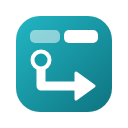
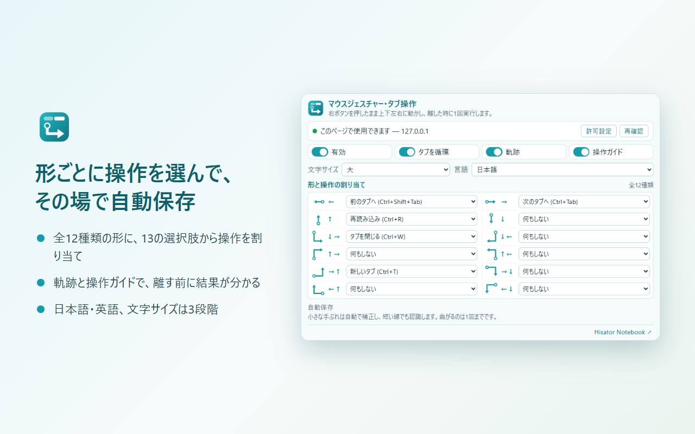
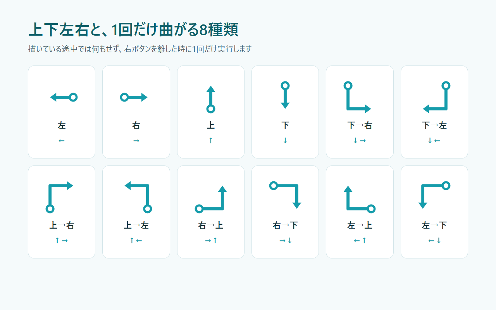
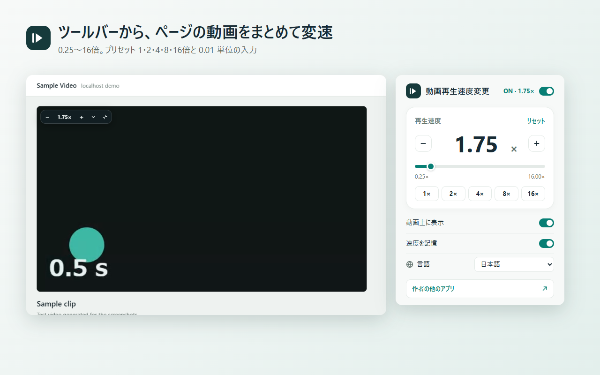
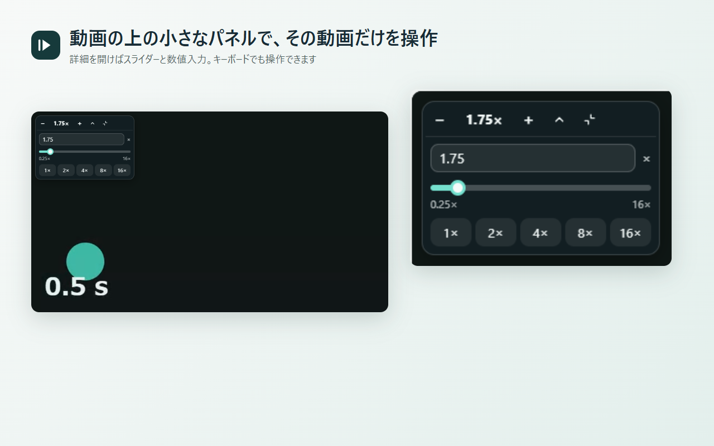

기타 제작물 — 브라우저 확장 프로그램
— Google Chrome · Microsoft Edge · Mozilla Firefox용 경량 · 외부 전송 제로 확장 프로그램
— 01 / Mouse Gestures – Tab Control

마우스 제스처·탭 조작
Mouse Gestures – Tab Control
마우스 오른쪽 버튼을 누른 채 상하좌우로 그린 뒤 놓기만 하면 탭 전환, 새 탭, 닫기, 복원, 뒤로, 앞으로, 새로고침, 스크롤을 빠르게 실행하는 브라우저 확장 프로그램입니다.
- 총 12가지 모양 × 13가지 동작: 상하좌우 4방향과 한 번 꺾이는 8가지 모양에 원하는 동작을 지정하고 즉시 자동 저장
- 궤적 및 동작 가이드 표시: 그리는 동안 파란 궤적과 실행될 동작 이름을 표시하여 버튼을 놓기 전에 결과 확인 가능 (Esc 키로 취소)
- 외부 전송 제로·경량 설계: 방문 기록 수집이나 외부 서버 통신 없이 설정은 브라우저 내부에만 저장
각 브라우저 스토어에서 추가 (무료)


— 02 / Tempo – Video Playback Speed
동영상 재생 속도 변경 (Tempo)
Tempo – Video Playback Speed
웹 페이지의 HTML5 동영상 재생 속도를 0.25배부터 최대 16배까지 0.01배 단위로 자유롭게 조절할 수 있는 브라우저 확장 프로그램입니다. 툴바에서 일괄 변경하거나 동영상 위의 작은 패널로 개별 조작할 수 있습니다.
- 0.25~16배·0.01 단위 정밀 조절: 1·2·4·8·16배 원탭 프리셋과 슬라이더·숫자 입력을 통한 세밀한 조절
- 동영상 위 미니 패널 & 키보드 조작: 시청을 방해하지 않는 접이식 패널로 페이지 내 특정 동영상만 개별 제어 가능
- 속도 자동 기억 & 12개 언어 지원: 탭이나 사이트를 다시 열어도 설정한 속도를 유지하며 원클릭 OFF로 1배속 복귀
각 브라우저 스토어에서 추가 (무료)

